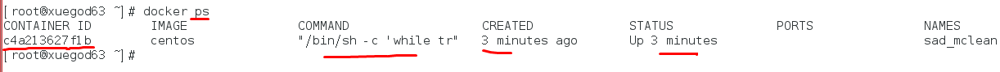

例1：运行一个 container并加载镜像centos，运行起来这个实例后，在实例中执行 /bin/bash命令
docker常用参数：
run 运行
-i 以交互模式运行容器，通常与 -t 同时使用；
-t 为容器重新分配一个伪输入终端，通常与 -i 同时使用；
[root@xuegod63 ~]# docker images
REPOSITORY TAG IMAGE ID CREATED SIZE
docker.io/centos latest 196e0ce0c9fb 12 days ago 196.6 MB
[root@xuegod63 ~]# docker run -it docker.io/centos:latest /bin/bash #启动一个实例，也就2秒就可以搞定
[root@068fd8c70344 /]# ls #查看实例环境
[root@f072b5ae7542 /]# cat /etc/redhat-release
退出容器：
[root@f072b5ae7542 /]#exit
例2：在 container 中启动一个长久运行的进程，不断向stdin输出 hello world 。模拟一个后台运行的服务
docker常用参数：
-d 后台运行容器，并返回容器ID； -c 后面跟待完成的命令
[root@xuegod63 ~]# docker run -d docker.io/centos:latest /bin/sh -c "while true;do echo hello world; sleep 1; done"
输出：1b3493487c4fde6eb233d59fa9ab9a204ad993cd3debbd5a9a28be6816694605 #容器的ID
从一个容器中取日志，查看输出的内容
语法： docker logs 容器实例的Name/ID
[root@xuegod63 ~]# docker logs 1b3493487c4 #容器的ID可以写全，也可以不写全，只要唯一就可以了
hello world
hello world
也可以使用短ID或docker实例的名字查看日志输出：
[root@xuegod63 ~]# docker logs c4a213627f1b
或：
[root@xuegod63 ~]# docker logs compassionate_mclean
查看正在运行的容器：
[root@xuegod63 ~]# docker ps #列出所有运行中容器。

[root@xuegod63 ~]# docker ps -a #-a 列出所有容器（包含沉睡/退出状态的容器）；

[root@xuegod63 ~]# docker images #列出所有本地镜像
例4：启动、停止、重启 container容器实例
启动： run # 创建并运行docker实例
[root@xuegod63 ~]# docker run -d docker.io/centos:latest /bin/sh -c "while true;do echo hello world; sleep 1; done"
[root@xuegod63 ~]# docker stop 1a63ddea6571 关闭容器
1a63ddea6571
[root@xuegod63 ~]# docker start 1a63ddea6571
1a63ddea6571
[root@xuegod63 ~]# docker restart 1a63ddea6571
1a63ddea6571
删除指定 container ： rm
[root@xuegod63 ~]# docker rm e085da6919af
Error response from daemon: You cannot remove a running container e085da6919af2f294d73f8e717f93326f6c1a803938e8057aebfc36e28d05808.
Stop the container before attempting removal or use -f
解决：你可以先把容器1a63ddea6571 关闭，然后再删除或加-f 强制删除
杀死ID为c4a213627f1b的容器：
[root@xuegod63 ~]# docker kill c4a213627f1b #杀死一个容器